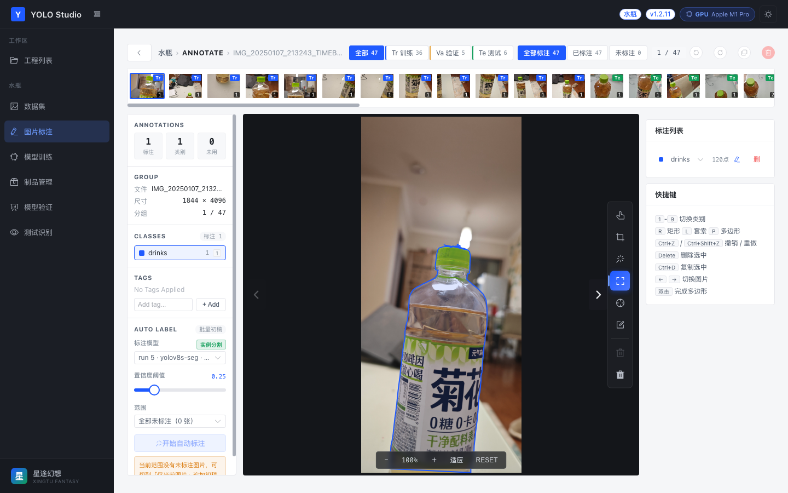
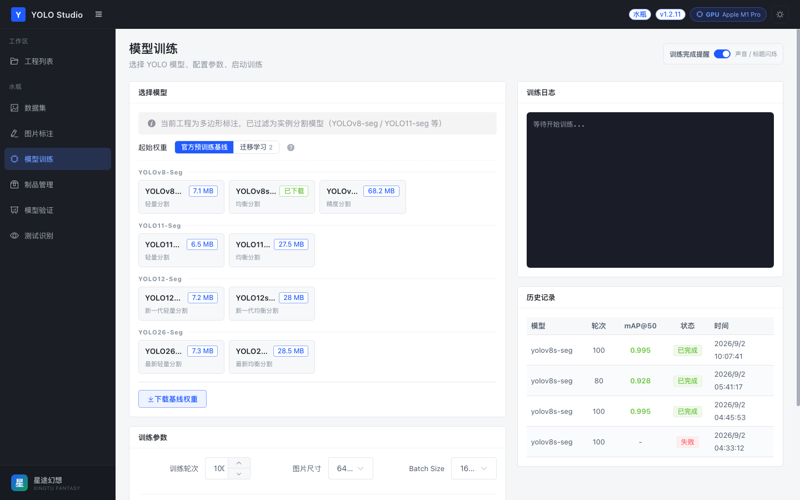

Fine-tune YOLO on your own images, locally: labeling to ONNX export
This is the walkthrough I wish existed when I started: every step from a folder of phone photos to an ONNX file, without uploading the images anywhere.
I'll use YOLO Studio as the workbench because it's the one I know, and because it's MIT licensed and local. The workflow itself is not specific to it — if you'd rather drive Ultralytics from a notebook and label in CVAT, the sequence and the pitfalls are the same.
What you need
- Python 3.9+ (3.10+ recommended) and Node 18+
- A machine that can run PyTorch. Apple Silicon gets MPS acceleration; otherwise CPU, which is slower but fine for small datasets
- Some images and a clear idea of the classes. "Some" means: 50 is enough for a smoke test, a few hundred is where fine-tuning starts to be useful. More important than count is variety — angles, lighting, backgrounds, occlusion
- Patience for one ~375 MB SAM download if you want assisted polygon labeling
1. Install and start
git clone https://github.com/cv936669367/yolo-studio
cd yolo-studio/backend
python -m venv venv && source venv/bin/activate
pip install -r requirements.txt
# terminal 2
cd ../frontend && npm install && npm run dev
Backend on :8000, UI on :3000. There's also a start.sh that manages both, but it expects the venv and node_modules to exist already, so do the two installs once either way. The first API call creates backend/data/ with the SQLite database and the image/weight/output directories.
2. Create the project — and mean it
Pick the task type deliberately:
- Rectangle / detection if "where is it" is the question. Labels are boxes, training uses
yolov8n.pt-style detect weights. - Polygon / segmentation if the outline matters — defects, area measurement, anything where a box around a bottle is too coarse. Labels are polygons, and training only offers
-segweights.
The class list is the contract for everything downstream. drinks and bottle are different classes forever, and pre-labeling from a COCO baseline matches names literally, so a baseline's bottle will not help a class called drinks. Decide the names first; renaming later means touching every annotation.
3. Upload, then split on purpose
Batch upload, then set split ratios. The default random split is fine for web-scraped images, and wrong for photos from a production line: five frames of the same object 0.3 seconds apart are near-duplicates, and if one lands in train and another in val, your validation score is measuring memorization.
Before training, check the split. Keep whole capture sessions on one side. If you're not sure, be conservative: a slightly smaller training set with an honest validation set beats a flattering number.
Also beware the "unannotated" filter: it asks whether an image has any annotation, not whether all objects are labeled. A picture with one box drawn and three objects in it counts as annotated.
4. Label — box, polygon, or prompt
For detection, boxes. For segmentation, start with a box prompt and let SAM do the outline:
- Box prompt: drag a rectangle around the object. SAM segments inside it and returns a polygon with the vertices already in the editor. Good for clean, well-separated objects.
- Point prompt: left-click on the object to add a positive point, right-click on background to add a negative one. Better when the object touches similarly coloured background and a box would drag the wrong pixels in.
- Manual: polygon with per-vertex editing, a freehand lasso, plus rectangles. Still the right tool for thin structures, transparent objects and anything AMOLED-reflective.
The generated polygon is editable, not baked. SAM's job is to get you to "roughly right"; your job is the class, the boundary convention (does the neck count as part of the bottle?) and the cases it got wrong.
Two conventions worth writing down before you label 300 images: how you treat occluded objects (label the visible part? skip?), and whether truncated objects at the frame edge get labeled. Inconsistent conventions produce a model that's confidently inconsistent.

The polygon in the editor came from a single box prompt. Every vertex is still draggable.5. Train — the parameters that actually matter
Start with a small model. YOLOv8n or YOLOv8s will tell you in minutes whether your data/labels/split are sane. Move to m or l only after the small model's curves look reasonable.
| Parameter | Reasonable start | What it does |
|---|---|---|
| Epochs | 50–100 for a small dataset | Too few underfits; too many overfits — watch the validation curve, not the training loss |
| Image size | 640 | Larger costs memory and time roughly quadratically; only useful if small objects matter |
| Batch size | As large as fits | Lower it first if you hit memory errors |
| Learning rate | Leave the default | Change it only when you have a reason |
| Early stopping | On, patience ~20–50 | Stops runs that have stopped improving |
Two things that surprise people:
- The first epoch looks terrible. mAP near zero at epoch 1 is normal for fine-tuning; the curve usually climbs after the warmup. Don't cancel.
- The model list is not a menu of equally-supported options. The app is pinned to
ultralytics==8.3.0. Newer families in the list may need a newer Ultralytics to load their weights. YOLOv8 is the safe path; verify before committing to anything newer.
Training picks MPS if available, otherwise CPU. There's no CUDA branch in the current code, so an NVIDIA box will run on CPU — workable for a small dataset, painful for a large one.

Pick the base weights, set epochs/imgsz/batch, and watch the per-epoch metrics come back.6. Read the evaluation page like a skeptic
The cards show mAP@50, mAP@50:95, precision and recall. What they mean in practice:
- Precision — of the objects the model reported, how many were right. Low precision = false alarms.
- Recall — of the objects that were there, how many it found. Low recall = misses.
- mAP@50 — average precision at a loose IoU threshold. Good for "is the model in the right area".
- mAP@50:95 — averaged over stricter thresholds. Closer to what deployment feels like.
Then look at the confusion matrix and the validation predictions, not just the numbers. A 0.98 mAP on 8 validation images is not a result; it's a rounding error with a progress bar. If your validation set is tiny, expect the number to move a lot between runs.
For segmentation projects, remember the metric cards read box metrics. Mask quality and contour smoothness need their own check — look at the predicted contours, especially on the objects you know are hard.
7. Test on images the model has never seen
Upload a handful of new photos on the test page, pick the run, and move the confidence threshold around. Lower threshold → more candidates and more false positives; higher → fewer, cleaner, more misses. The NMS IoU threshold handles overlapping duplicate boxes on crowded scenes.
This is the step where you find out that your dataset was 80% one background. Fix it by adding images, not by retraining the same data harder.
8. Export
best.pt for PyTorch, or export to ONNX / TorchScript from the artifacts pane. Export runs through Ultralytics, so the usual caveats apply: the exported graph is fixed to the image size you exported with, and you should re-validate the exported model against the PyTorch one on a few images before shipping it. ONNX Runtime, TensorRT and OpenVINO all have their own quantization and layout quirks; "it exported" is not "it deploys".
9. Close the loop
The part that makes this a workflow rather than a one-off: take the best.pt you just trained, run it over the next batch of unannotated images, and use the output as draft labels. Fix them, retrain, repeat. Each round shifts human time from drawing to reviewing — and the second round is where a custom model starts beating a generic baseline, because it finally knows your classes.
A few guardrails for auto-labeling:
- Start with a small range of images and a threshold you trust, not the whole dataset at once.
- Review everything the first time. The point is to catch systematic errors before they get baked into the next training set.
- Cancelling a run keeps the labels already written, so a partial pass is not wasted.
- In polygon projects, a missing contour falls back to a four-corner box. Check those — they're the ones that quietly poison a segmentation dataset.
That's the whole loop. No cloud account, no upload, no per-image pricing. Just a folder, a model, and a habit of looking at the validation predictions before believing the number.
Repo: github.com/cv936669367/yolo-studio — MIT.